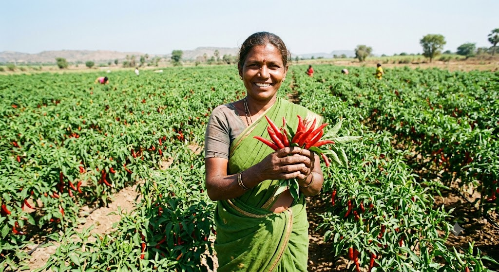

The Real Story Behind Guntur Karam
Why supermarket packets taste bitter and flat, and how SSR Farms in Guntur is restoring the genuine taste of hand-de-stemmed, stone-pounded karam.
Every single stalk removed by hand. Zero stem dust cheating.
Naturally cured on clean fabric mats under open Andhra sunshine.
Cool, low friction keeps essential garlic and spice oils intact.
Moisture-proof packing locks in the pungent farm aroma.
Mirchi is in our blood. Growing up in Guntur.
If you grew up anywhere in Guntur or the Krishna river basin, the unmistakable scent of drying chillies is part of your childhood. Guntur’s nutrient-dense black cotton soil produces India’s most prized chilli varieties—celebrated for their fiery pungency and glowing ruby-red hue.
For generations, no Andhra household ever bought commercial branded powder packets from supermarket shelves. Every summer right after harvest, families bought whole pods directly from growers, spread them across verandas, snapped off every green stem by hand, dry-roasted whole spices, peeled fresh country garlic, and pounded an entire year’s supply in stone mortars.

The Supermarket Shortcut: Why Factory Powder Tastes Bitter
When corporate conglomerates industrialized spice manufacturing, they prioritized machine output and profit margins over authentic taste:
1. The Stem Weight Trick (తొడిమలు): Removing stems requires careful manual labor. Industrial mills skip this step completely. They crush green stems, fibrous woody caps, and field dust directly into the grinder. This cheats consumers of 15% to 20% in artificial filler weight and leaves a sharp, unpleasant bitter aftertaste in your curries.
2. Artificial Sudan Red Dyes: Commercial mills often purchase cheap, aged chillies that have sat in cold-storage warehouses for 2 to 3 years. Because old chillies turn pale and discolored, factories inject chemical red dyes and artificial oleoresins to fake freshness.
3. Scorched at 3,000 RPM: High-speed industrial pulverizers heat up to over 80°C during grinding, burning the chillies and scorching the natural volatile oils before the packet is even sealed.

What Is Actually Inside Your 1 Kg Packet?
Compare how commercial brands cut corners versus how SSR prepares authentic farm karam.
The 5 Farm Promises Behind Every Batch
We operate in Guntur with a clear promise: honest sourcing, traditional slow stone milling, and complete ingredient transparency.
Handpicked at Peak Redness
Only fully ripe, deep crimson pods harvested at peak natural heat from trusted local farms in Guntur.
7 Days Open Sun Curing
Spread across clean fabric mats under blazing Andhra sunshine. Natural solar drying locks in essential carotenoids and oils.
100% Manual De-Stemming
Every green stalk is snapped off pod-by-pod. You pay only for pure chilli pod flesh without stem dust.
Slow Stone Pounding
Cool, low-friction stone pounding with whole peeled country garlic and roasted spices keeps delicate aroma compounds intact.
Sealed Within 24 Hours
Weighed and hermetically sealed into heavy-gauge 1 Kg and 2 Kg family pouches within 24 hours of pounding.

4 Authentic Andhra Home Recipes
No 50 confusing industrial SKUs. Just the four authentic, deeply loved Andhra home preparations.
Guntur Goddu Karam
Pounded with whole country garlic and roasted cumin. The undisputed king for boiled egg roast, aloo vepudu, and hot rice with cow ghee.
Order 1Kg / 2Kg Pack →Guntur Masala Karam
All-in-one curry spice stone-ground with roasted coriander, cumin, cloves, cinnamon, and garlic. Gives thick, rich gravy depth to pulusu and chicken curries.
Order 1Kg / 2Kg Pack →Guntur Nalla Karam
Charcoal-roasted unpolished black sesame and peanuts blended with garlic, tamarind, and chillies. Essential for crispy Ghee Karam Dosa and soft idlis.
Order 1Kg / 2Kg Pack →Guntur Kobbari Karam
Intact sun-dried mature copra roasted golden and stone-crushed with chillies and garlic. Balances natural coconut richness with warm savory heat.
Order 1Kg / 2Kg Pack →